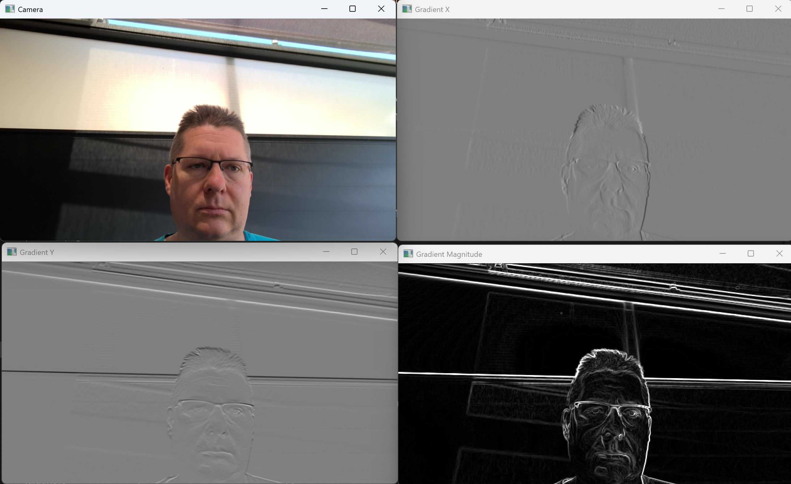

Kantendetektion mit Sobel
In diesem Praktikum wollen wir einen einfachen Kantendetektor mit dem Sobeloperator implementieren.
{kind=link}
Der Code
In diesem Praktikum arbeiten Sie in der Datei
kanten.py
Die Kantendetektion
In dieser Aufgabe implementieren Sie die Funktion processImage
- kanten.processImage(frame)[Quellcode]
Process the provided image (3-channel BGR) and calculate gradients in X and Y direction as well as the gradient magnitude.
gx and gy shall contain the gradient direction image with values between -1 and +1 grad shall contain the gradient magnitude image with values between 0 and 1
- Parameter:
frame – 3-channel BGR image (np.array)
- Rückgabe:
3-tupel (gx, gy, grad) containing the gradient image in X and Y direction as well as the gradient magnitude image (1-channel np.float32 images each).
Zur Kantendetektion verwenden wir den s.g. Sobelfilter. Dabei wird das Bild mit zwei Masken gefaltet. Für den Gradienten in X-Richtung verwenden wir diese Maske
und die für den Gradienten in Y-Richtung entsprechend
Da der Sobel-Operator nur auf Grauwertbildern arbeitet müssen wir das Bild jedoch zunächst in ein solches umwandeln. Verwenden Sie dazu die cv2.cvtColor Methode.
Wandeln Sie das Bild über np.float32 in ein Float-Bild um. Normieren Sie die Grauwerte vorher indem Sie durch 255.0 teilen.
Der Sobel-Operator selbst ist in OpenCV direkt verfügbar über die cv2.Sobel Methode. Verwenden Sie ksize=3 und ddepth=cv2.CV_32F.
💡 Überlegen Sie durch welche Konstante Sie das Ergebnis jeweils dividieren müssen um es auf den Wertebereich von -1 bis +1 zu normieren.
Berechnen Sie dann die Gradientenstärke \(\nabla I = \sqrt{I_x^2 + I_y^2}\).
💡 Überlegen Sie wieder durch welche Konstante Sie das Ergebnis dividieren müssen um es auf den Wertebereich von 0 bis +1 zu normieren.
Lösung anzeigen
def processImage(frame):
frame_gray = cv2.cvtColor(frame, cv2.COLOR_BGR2GRAY)
frame_gray = np.float32(frame_gray / 255.0)
gx = cv2.Sobel(frame_gray, cv2.CV_32F, 1, 0, ksize=3) / 4.0
gy = cv2.Sobel(frame_gray, cv2.CV_32F, 0, 1, ksize=3) / 4.0
grad = np.sqrt(gx**2 + gy**2) / np.sqrt(2.0)
return gx, gy, grad
Die Anzeige
In dieser Aufgabe implementieren Sie die Funktion displayImage
- kanten.displayImage(gx, gy, grad)[Quellcode]
Apply appropriate scaling and display the provided images.
- Parameter:
gx – Gradient image in X-Direction (np.float32 image with values between -1 and +1)
gy – Gradient image in Y-Direction (np.float32 image with values between -1 and +1)
grad – Gradient magnitude image (np.float32 image with values between 0 and 1)
Dazu müssen Sie die berechneten Gradientenbilder zunächst geeignet skalieren. OpenCV zeigt Grauwertbilder mit Datentyp np.float32 nämlich so an, das der Wert 0.0 auf Schwarz und 1.0 auf weiß abgebildet wird. Kleinere sowie größere Werte werden jeweils abgeschnitten (gesättigt).
💡 Überlegen Sie durch welche lineare Transformation sie die Gradienterichtungsbilder vom Wertebereich zwischen -1 und +1 sinnvoll auf den von OpenCV erwartete Darstellungsbereich zwischen 0 und 1 abbilden können.
Zeigen Sie die Bilder dann mit cv2.imshow in zwei eigenen Fenstern an.
💡 Überlegen Sie Die Gradientenstärke ist bereits sinnvoll normiert und nimmt Werte zwischen 0 und 1 an. Dennoch kann es Sinn machen zur Kontrastverbesserung bei der Anzeige einen zusätzlichen Faktor einzuführen.
Zeigen Sie das skalierte Gradientenstärkebild ebenfalls mit cv2.imshow an.
Lösung anzeigen
def displayImage(gx, gy, grad):
cv2.imshow('Gradient X', (0.5 * gx + 0.5))
cv2.imshow('Gradient Y', (0.5 * gy + 0.5))
cv2.imshow('Gradient Magnitude', 4.0 * grad)
Der Haupt-Loop
In dieser Aufgabe implementieren Sie die letzte Funktion mainLoop
- kanten.mainLoop()[Quellcode]
The main loop of this program
Folgen Sie den kommentierten TODO-Anweisungen.